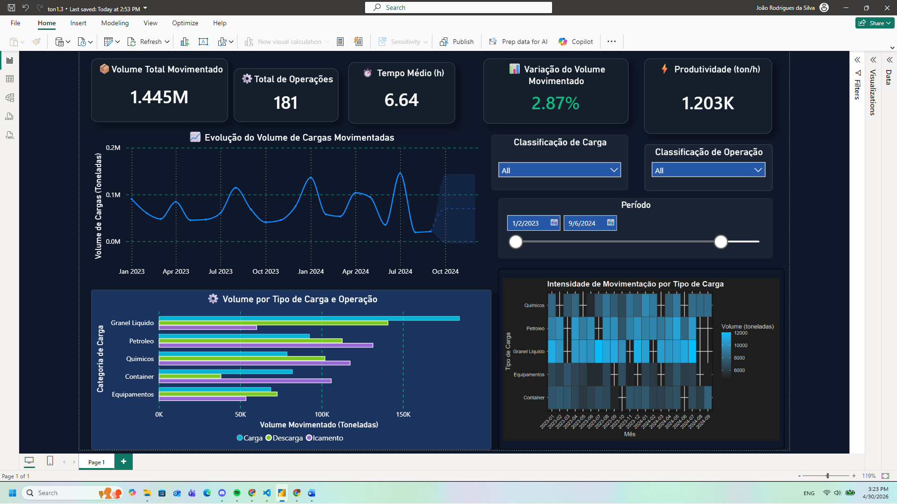

Este dashboard apresenta o monitoramento da movimentação de cargas com foco em volume, produtividade e eficiência operacional, permitindo identificar padrões e apoiar decisões logísticas.
🔗 Acesse o dashboard interativo no Power BI:
Abrir Dashboard no Power BI

A análise integrada dos indicadores permite entender o comportamento da operação, identificar variações de desempenho e direcionar ações para otimização da eficiência logística.